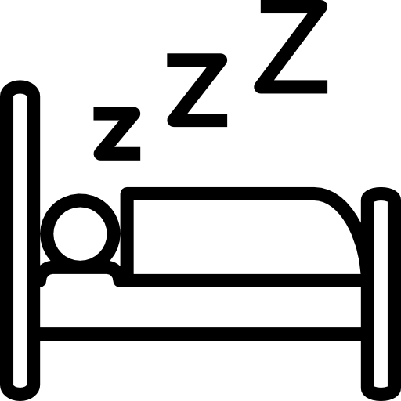

Common Fitness Mistakes
1. Skipping Warm-Ups
Many people start workling out without doing a proper Warm-up, which could lead them to injury.
What warm-up should I do? Click here
2. Using Poor Form
This is the most common that a bignner do. Mnay beginner fcus on heavy wights instaed of learning the way Technique for that.
Use lighter weights and learn to control that.
Click here to learn the correct teqchniue
3. Lifting too heavy
Many bignneer see others and try to lift too much too soon which cna casue them to injure.
What warm-up should I do? Click here

4. Not resting enough
Your muslce grow during rest, when to take enogh rest your muslce get time to recover, repair damged muslce fibers, and becom stornger. Without enough recovery, your muscles may stay fatigued, performance can decrease, and the risk of injury may increase
5. Inconsitent Training
Skiiping workouts and being Inconsitent will make your prgess much slower.
What technique should I follow? Click here
6. Ignoring Nutrition
This is the most importnat part. Dietiing play a vitral role to reach your fitness goals, you can't workout by having a bad diet. It will make ur muslces to lose and over fatigue.
Click here for the basic diet.